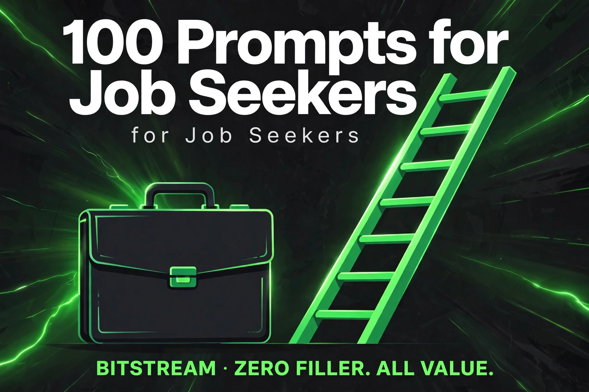

BITSTREAM · ZERO FILLER. ALL VALUE.
100 Prompts
for Job Seekers
100 copy-paste prompts for landing your next job.
Resumes, cover letters, interviews, salary talks — done.
ESSENTIAL PACK · $7.99
How to use this pack (60 seconds)
- Open a free AI tool — ChatGPT (chatgpt.com), Claude (claude.ai), Gemini (gemini.google.com), or Meta AI. No account tricks, no paid plan needed.
- Copy any prompt and replace the [BRACKETED] parts with your details.
- Paste your real materials. These prompts work best when you paste your actual resume, the real job posting, or your real background — specifics in, quality out.
- Treat the first answer as a draft. Reply with "make it shorter," "more confident," or "tailor it to startups" until it's right.
- Keep it honest. Never let the AI invent job titles, dates, or results you don't have. Verify everything before it goes out.
Rule 1 — Describe, don't write. You don't need to be a great writer. Describe what you want in plain words and let the AI do the writing.
Rule 2 — Never fake your history. If a prompt ever invents a job, a number, or a degree you don't have, delete it. Recruiters check.
Rule 3 — One application at a time. Don't blast 50 identical resumes. Tailor each one with prompts 07–09. Five targeted applications beat fifty generic ones.
1 · Resumes That Beat the ATS
Most big companies screen resumes with software first. These prompts make yours readable by the robot and the human.
PROMPT 01
Full resume rewrite for a target role
Rewrite my resume for a [job title] role. Keep everything honest — only use the facts in my resume below, never invent jobs, dates, or numbers. Reorder and reword so the most relevant experience stands out, use strong action verbs, and keep it to one page: [paste your resume].
PROMPT 02
ATS keyword match check
Compare my resume against this job posting. List every keyword and skill the posting mentions that is MISSING from my resume, and show me exactly where to add the ones I actually have: [paste job posting, then paste resume].
PROMPT 03
Resume summary that isn't generic
Write a 3-line professional summary for the top of my resume. My background: [years of experience, field, top 2 skills, what you're targeting]. Make it specific — no "hard-working team player" clichés.
PROMPT 04
Bullet points with real results
Rewrite these resume bullets to show results, not just tasks. Keep them honest — don't invent numbers, but suggest what KIND of number I should add if I can remember one: [paste your bullets].
PROMPT 05
Employment gap explanation
I have a [2-year] employment gap on my resume because [raising kids / caregiving / illness / school]. Write a one-line entry for the gap that's honest and professional, plus 2 bullets about transferable skills from that time.
PROMPT 06
Career changer resume reframe
I'm switching from [retail management] to [customer success]. Reframe my experience below so a hiring manager sees the transferable skills. Keep it truthful — reframe, don't fabricate: [paste your resume].
PROMPT 07
One resume, one job — quick tailor
Tailor my resume to this job posting in under 5 minutes of edits. Give me the exact changes: which bullets to reword, which keywords to add, and what to cut. Don't rewrite the whole thing: [paste posting, then resume].
PROMPT 08
Skills section builder
Based on my background below and these [3 job postings I'm targeting], build a skills section grouped into categories (technical, tools, soft skills). Only include skills I actually have: [paste background + postings].
PROMPT 09
ATS format check
Review my resume for ATS-friendliness: flag tables, text boxes, graphics, unusual fonts, or headers that could confuse screening software. Tell me exactly what to fix: [paste your resume text].
PROMPT 10
Resume for no experience
I'm applying for my first job as [a barista / warehouse associate / data entry clerk]. I have [no formal work experience] but I've [babysat, volunteered at church, helped in a family business]. Build a one-page resume from that — school, projects, and anything that shows I'm reliable.
PROMPT 11
Cut it to one page
My resume is [2.5 pages] and I need it on one page. Cut the weakest 40%: tell me what to delete, what to merge, and what to keep. Don't just shrink the font — actually prioritize: [paste your resume].
PROMPT 12
Resume red flags scan
Read my resume like a skeptical hiring manager. Flag anything that looks off: vague claims, unexplained jumps, typos, inflated titles, missing dates. Be blunt: [paste your resume].
2 · Cover Letters That Get Read
Short, specific, and human. No "I am writing to express my interest in the position of..." ever again.
PROMPT 13
Cover letter draft
Write a cover letter for [job title] at [company]. My relevant experience: [2-3 key points from your background]. Keep it under 250 words, confident tone, no corporate buzzword soup. Sound like a person, not a template.
PROMPT 14
Cover letter from a real posting
Write a cover letter based on THIS job posting. Mirror the company's own language, answer their top 3 requirements with my matching experience, and skip anything I can't back up: [paste job posting, then your background].
PROMPT 15
Career-change cover letter
Write a cover letter that explains my career change from [teaching] to [instructional design]. Address the "why the switch" question head-on in the first paragraph, then connect my transferable skills. Under 250 words.
PROMPT 16
Referred-by cover letter
Write a cover letter where I was referred by [name, their role at the company]. Name-drop them naturally in the opening, then make the case for me in 3 short paragraphs. Under 200 words.
PROMPT 17
Cover letter opener, 5 versions
Write 5 different opening paragraphs for a cover letter for [job title] at [company]. Make them all different styles: bold, story-based, direct, curious, and company-mission-tied. I'll pick my favorite.
PROMPT 18
Short "why this company" paragraph
Write one paragraph on why I want to work at [company]. What I actually know about them: [recent news, product, mission point]. Make it specific enough that it couldn't be sent to any other company.
PROMPT 19
Cover letter tone fixer
Rewrite this cover letter to sound [more confident / warmer / more direct]. Keep every fact the same, just change the tone: [paste your draft].
PROMPT 20
Cold cover letter (no posting)
Write a short speculative cover letter to [company] — they have no posted opening, but I want to be on their radar for [role type]. Keep it under 150 words, specific about what I bring, easy for them to say "let's talk."
PROMPT 21
Cover letter for a stretch role
I'm applying for [job title] and I'm slightly underqualified — I meet about [60%] of the requirements. Write a cover letter that owns the gap honestly and sells my learning speed and closest wins. Confident, not apologetic.
PROMPT 22
Email cover note (short version)
Write a 5-sentence email I can paste into the body of a job application email, attaching my resume. Role: [job title] at [company]. Punchy enough to make them open the attachment.
PROMPT 23
Cover letter proofread
Proofread this cover letter like a hiring manager: fix grammar, cut fluff sentences, flag anything that sounds arrogant or desperate, and tighten it under 250 words: [paste your draft].
PROMPT 24
Referral request message
Write a short message to [an old coworker] asking if they'd refer me for [job title] at [their company]. Make it easy to say yes: include my background in 2 lines, the job link, and a clear out if they're not comfortable.
3 · LinkedIn & Online Presence
Recruiters live on LinkedIn. Make your profile the one they stop scrolling for.
PROMPT 25
LinkedIn headline rewrite
Rewrite my LinkedIn headline. I do [what you do] and I want to attract [recruiters hiring for X / clients needing Y]. Give me 5 options under 220 characters — specific, no "open to work" desperation. Current headline: [paste it].
PROMPT 26
LinkedIn About section
Write my LinkedIn About section in first person. My story: [background, what I'm good at, what I'm looking for next]. Conversational, confident, 150-200 words. End with a clear call to action for recruiters.
PROMPT 27
LinkedIn experience bullets
Turn my resume bullets for [job title at company] into LinkedIn-friendly experience entries — slightly more casual than a resume, with one line of context about what the company does: [paste bullets].
PROMPT 28
LinkedIn skills ordering
Here are my skills: [list them]. I'm targeting [job title] roles. Tell me which 10 to pin at the top of my LinkedIn in priority order, and which ones to drop or hide.
PROMPT 29
LinkedIn recommendation request
Write a message asking [my former manager] for a LinkedIn recommendation. Remind them of [the project we worked on] so they have something specific to write about, and make it easy to decline gracefully.
PROMPT 30
LinkedIn recommendation draft (for them)
Draft a LinkedIn recommendation that [my former manager] could post about me — I'll offer it to them as a starting point they can edit. Based on: [what we worked on, my 2 biggest contributions]. Warm, specific, 4-5 sentences.
PROMPT 31
"Open to work" announcement post
Write a LinkedIn post announcing I'm looking for my next role as [job title]. Include: what I do well, what I'm looking for, and a simple ask for introductions. Confident tone — not begging, not oversharing about why I left.
PROMPT 32
LinkedIn post that shows expertise
Turn this work story into a LinkedIn post that shows I know my stuff without bragging: [describe a problem you solved at work]. Hook first line, short paragraphs, end with a question to get comments.
PROMPT 33
Recruiter message reply
A recruiter messaged me about [role at company]. Write a reply that: thanks them, asks 4 key questions (salary range, remote/hybrid, team size, timeline), and keeps me in control of the conversation. Here's their message: [paste it].
PROMPT 34
Recruiter message for wrong-fit role
A recruiter reached out about a role that's [too junior / not my field / pays below my range]. Write a polite reply that declines but tells them exactly what I DO want, so they bring me the right roles next time.
PROMPT 35
Portfolio site bio
Write a short bio for my portfolio website. I do [freelance graphic design], my style is [bold, minimal], and I want [small business clients] to contact me. 80 words, personality included, end with a contact prompt.
PROMPT 36
Freelance profile bio (Upwork/Fiverr)
Write my [Upwork] profile bio. Service: [video editing for YouTubers]. Experience: [3 years, 40+ projects]. Include: what I deliver, turnaround time, and one line that builds trust. Under 150 words.
4 · Application Tracking & Staying Organized
The unsexy part that separates people who get interviews from people who get ghosted.
PROMPT 37
Application tracker spreadsheet
Design a job application tracker for me as a simple table I can build in Google Sheets. Columns I need: company, role, date applied, contact, status, follow-up date, notes. Plus 3 columns most people forget that actually matter. Explain what to log in each.
PROMPT 38
Weekly job search plan
I have [15 hours] per week for job hunting while working my current job. Build me a weekly plan: how many hours on applications, networking, skill-building, and follow-ups — and which days. Realistic, not aspirational.
PROMPT 39
Decode the job posting
Read this job posting and tell me: what does this role ACTUALLY involve day-to-day, which 3 requirements matter most, and am I qualified based on my background. Be honest if it's a stretch: [paste posting + your background].
PROMPT 40
Spot the red-flag posting
Read this job posting and flag red flags: unrealistic expectations, vague pay, "rockstar/ninja" language, signs of high turnover, or anything that suggests a bad work environment: [paste posting].
PROMPT 41
Application status summary
Here's where my applications stand: [list companies, roles, and status]. Tell me: which ones need a follow-up this week, which are probably dead, and where to focus my energy next.
PROMPT 42
Rejection post-mortem
I got rejected after [the second interview] for [role] at [company]. Here's what happened: [describe the process]. Give me an honest read on what might have gone wrong and 3 things to change for the next one. No sugarcoating.
PROMPT 43
Ghosted? Next move
I applied to [company] for [role] [3 weeks] ago, had [one phone screen], and now silence. Draft my next move: a follow-up message, and tell me honestly when to stop chasing and move on.
PROMPT 44
Job search goals for the month
Set me 4 realistic job-search goals for this month. My situation: [employed, 10 hrs/week to search, targeting marketing roles]. Make them numbers I can track — applications, conversations, follow-ups — not vibes.
5 · Interview Prep by Role
Walk in knowing what they'll ask. These prompts build you a custom prep sheet for any role.
PROMPT 45
Custom interview question bank
I'm interviewing for [job title] at [company type: startup / corporate / nonprofit]. Generate the 15 most likely interview questions for this role, grouped by: about me, technical/skill, behavioral, and culture fit. Include what each question is REALLY trying to find out.
PROMPT 46
Mock interviewer
Act as a hiring manager interviewing me for [job title]. Ask me one question at a time, wait for my answer, then give me honest feedback on each answer before asking the next. Start with: "Tell me about yourself." My background: [2-3 lines].
PROMPT 47
"Tell me about yourself" — 60 seconds
Write my 60-second "tell me about yourself" answer. My background: [current role, years, key strength, what I'm targeting]. Structure: present, past, future. Conversational, confident, no rambling.
PROMPT 48
"Why this company?" answer
Help me answer "Why do you want to work here?" for [company]. What I genuinely know/like about them: [2 facts]. Make it specific — the kind of answer that proves I did my homework.
PROMPT 49
"Why are you leaving?" answer
Help me answer "Why are you leaving your current job?" The real reason is [underpaid / bad manager / no growth — I'll be honest here]. Turn it into a forward-looking, professional answer that doesn't badmouth anyone.
PROMPT 50
"What's your greatest weakness?" answer
Help me answer the weakness question honestly. A real weakness of mine: [describe it]. Frame it as self-aware with what I'm doing about it — no fake "I'm a perfectionist" answers.
PROMPT 51
Technical interview prep
I'm interviewing for [data analyst] and expecting technical questions on [SQL and Excel]. Give me 10 likely technical questions with model answers, plus 3 practice problems I can work through. My level: [intermediate].
PROMPT 52
Questions to ask THEM
Give me 10 smart questions to ask the interviewer for [job title] at [company]. Mix: role-specific, team culture, growth, and one that reveals red flags. Nothing I could've found on their website.
PROMPT 53
Second-round / panel prep
I made it to a panel interview with [the hiring manager, a peer, and a director] for [role]. What does each person care about, what will each one likely ask, and how should I adjust my answers for each?
PROMPT 54
Phone screen prep
I have a 20-minute phone screen for [role] at [company] tomorrow. Give me a prep sheet: the 8 questions they'll almost certainly ask, my talking points for each, and the 3 questions I should ask before hanging up.
PROMPT 55
Video interview setup checklist
I have a video interview for [role] on [Zoom]. Give me a practical checklist: tech setup, background, lighting, what to wear, body language tips, and what to have open on my screen during the call.
PROMPT 56
Post-interview debrief
I just finished an interview for [role] at [company]. Here's how it went: [what they asked, how I answered, anything awkward]. Tell me: what went well, what to fix next time, and whether I should send anything beyond a thank-you note.
6 · STAR Stories & Behavioral Answers
"Tell me about a time when..." — build a bank of real stories so you never freeze.
PROMPT 57
STAR story builder
Turn this rough work story into a tight STAR answer (Situation, Task, Action, Result) I can use in interviews. Keep it under 90 seconds spoken. Here's the raw version: [describe what happened]. Don't invent details I didn't give you.
PROMPT 58
Story bank from my career
Based on my background below, identify my 8 strongest interview stories and map each to the behavioral question it answers best (conflict, leadership, failure, teamwork, pressure, etc.): [paste background or resume].
PROMPT 59
"Tell me about a conflict" answer
Help me answer "Tell me about a time you had a conflict at work." The real story: [describe it briefly]. Make me sound mature and solution-focused — no blaming, no drama, clear resolution.
PROMPT 60
"Tell me about a failure" answer
Help me answer "Tell me about a time you failed." The real story: [what happened]. Frame it honestly: own the mistake, show what I learned, and what I do differently now. Under 90 seconds spoken.
PROMPT 61
"Tell me about a time you led" answer
Help me answer a leadership question. I've never had a manager title, but I did [train new hires / lead a project / run a volunteer team]. Build a STAR answer that proves leadership without the title.
PROMPT 62
"How do you handle pressure?" answer
Help me answer "How do you handle pressure or tight deadlines?" with a real example from [my last job / school / volunteering]: [describe the situation]. Concrete and believable.
PROMPT 63
"Why should we hire you?" closer
Write my 45-second answer to "Why should we hire you?" for [job title] at [company]. My 3 biggest selling points: [list them]. Confident closer, not a begging summary.
PROMPT 64
Behavioral question drill
Quiz me on behavioral interview questions for [job title] roles. Ask one at a time, let me answer, then score my answer 1-10 and tell me exactly what to improve. Do 5 rounds.
PROMPT 65
Tough question: fired or laid off
Help me answer "Why did you leave your last job?" — the truth is I was [laid off / fired]. Write an honest, brief, forward-looking answer that addresses it directly without oversharing or sounding bitter.
PROMPT 66
Story length trimmer
My interview story is too long and I ramble. Cut this down to a tight 90-second STAR answer. Keep the punchy details, kill the backstory nobody needs: [paste your long version].
7 · Salary Negotiation & Job Offers
The highest-paid hour of your job search is the negotiation. Don't leave it on the table.
PROMPT 67
Know your market rate
What's the realistic salary range for [job title] in [city / remote US] with [X years] of experience? Give me a range I can actually negotiate from, and tell me which factors push someone to the top of it. Cite where the numbers come from.
PROMPT 68
"What are your salary expectations?" answer
Help me answer the salary-expectations question for [job title] at [company]. My target range is [$X–$Y]. Give me a script that states my range confidently without pricing myself out or lowballing.
PROMPT 69
Counteroffer script
They offered [$X] for [role]. I want [$Y] because [market rate / competing offer / experience]. Write my counter as an email AND a phone script: what to say, the exact ask, and responses to 3 common pushbacks.
PROMPT 70
Negotiate beyond salary
The salary for [role] is fixed at [$X] and they won't budge. What else can I negotiate? Give me a prioritized list — signing bonus, remote days, title, PTO, review timeline — with a script for asking for each one.
PROMPT 71
Offer comparison: A vs B
Compare these two offers honestly: [Offer A: $X, benefits, commute] vs [Offer B: $Y, benefits, remote]. Factor in taxes, health costs, commute time, and growth potential. Which is actually better, and by how much?
PROMPT 72
Offer letter red flags
Review this offer letter and flag anything concerning: non-compete clauses, at-will language, vague bonus terms, probation periods, IP assignments. Explain each in plain English: [paste the offer letter]. (This is an organizer, not legal advice — verify with a lawyer if something looks serious.)
PROMPT 73
Ask for more time to decide
I got an offer from [company] but I'm waiting on [another interview / a competing offer]. Write a message asking for [5 more days] to decide — grateful, professional, without revealing I'm stalling.
PROMPT 74
Decline an offer gracefully
Write a message declining the [job title] offer from [company]. I'm taking [another role]. Keep the door open — short, warm, professional, no detailed reasons.
PROMPT 75
Accept the offer (email)
Write my offer-acceptance email for [job title] at [company], starting [date], salary [$X]. Confirm the key terms back to them, express genuine enthusiasm, and ask about first-day logistics.
PROMPT 76
Negotiate a raise at your current job
Help me ask for a raise at my current job. My wins this year: [list them]. Market rate for my role: [$X–$Y]. I currently make [$Z]. Write the conversation script: opener, my case, the ask, and how to handle "there's no budget."
8 · Networking, Follow-Up & References
Most jobs come through people, not portals. These make reaching out feel natural, not awkward.
PROMPT 77
Thank-you email after interview
Write a thank-you email after my interview for [role] at [company] with [interviewer's name]. Reference [one specific thing we discussed] so it doesn't sound generic. Warm, brief, sent-the-same-day energy.
PROMPT 78
Thank-you note: panel interview
I interviewed with [3 people: names and roles] for [role]. Write 3 short, distinct thank-you notes — one per person — each referencing something different from our conversation. Not copy-paste versions of each other.
PROMPT 79
Follow-up: application check-in
I applied for [role] at [company] [10 days] ago and haven't heard back. Write a short follow-up email to [hiring manager / HR contact] that shows enthusiasm without sounding desperate.
PROMPT 80
Networking message that isn't awkward
Write a short LinkedIn message to [an alum at a company I like / someone I met at an event]. Reference [something specific about them], ask for [15 minutes of advice], and don't sound like I'm begging for a job.
PROMPT 81
Cold outreach to a hiring manager
Write a cold LinkedIn message to [hiring manager name] at [company] about [open role / roles like X]. Under 100 words: who I am, why them specifically, one proof point, easy ask.
PROMPT 82
Reconnect with an old contact
Write a message to [an old coworker I haven't talked to in 2 years]. Catch up genuinely for 2 sentences, then mention I'm job hunting for [role type] and ask if they'd keep an ear out. No guilt trip.
PROMPT 83
Informational interview request
Write a message asking [person] for a 20-minute informational chat about [their field / company]. Explain why THEM specifically, suggest 2 time options, and make clear I'm asking for insight, not a job.
PROMPT 84
Informational interview questions
I'm having a 20-minute informational chat with [a product manager at a tech company]. Give me 8 questions that'll actually teach me something: day-to-day reality, how they got in, what they'd do differently, and whether I'd like the work.
PROMPT 85
Reference request message
Write a message asking [my former boss] to be a job reference. Remind them of [when we worked together], tell them what roles I'm applying for, and offer to send my resume + talking points to make it easy.
PROMPT 86
Reference talking points (for your reference)
Draft a one-page brief I can send my references: the roles I'm applying for, 3 strengths to highlight, and 2 specific projects they can mention. Based on: [your background]. Makes their job easy and my references consistent.
PROMPT 87
Thank your references
Write a thank-you message to [my reference] after they vouched for me. Let them know [I got the job / I'm still in the process], and offer to return the favor anytime. Genuine, not transactional.
PROMPT 88
Networking follow-up after an event
I met [name] at [a job fair / meetup] and we talked about [topic]. Write a follow-up message to send tomorrow: reference the conversation, connect on LinkedIn, and suggest one low-pressure next step.
9 · Skill Gaps, Freelance & Your Next Move
Close the gap between the job you want and the resume you have — plus a freelance backup plan.
PROMPT 89
Skill-gap analysis
Compare my skills to these [3 job postings I want]. List: skills I already have, skills I can learn in under a month, and skills that take real training. Be honest about which gaps are dealbreakers: [paste your skills + the postings].
PROMPT 90
30-day skill crash plan
I need to learn [basic SQL] fast for job applications. Build me a 30-day plan, 45 minutes a day, using only FREE resources. Include what to practice each week and one small project to prove I can do it.
PROMPT 91
Free certification roadmap
What free or cheap certifications actually help someone get hired as [job title]? List 3-5, ranked by employer recognition, with cost, time to complete, and where to get each one. Skip the ones nobody respects.
PROMPT 92
Portfolio project ideas
I'm trying to break into [UX design] with no professional experience. Give me 3 portfolio project ideas I can build in [2-4 weeks] each that would actually impress a hiring manager — specific briefs, not "redesign an app."
PROMPT 93
Learn a tool employers want
Teach me [Excel pivot tables] from zero. One concept at a time — wait for me to say "got it" before moving on. After each concept, give me one practice task using a realistic example for [an office admin role].
PROMPT 94
Career path explorer
I'm currently [a customer service rep] and I want out. Based on my skills: [list them], suggest 5 realistic next-career paths, the pay range for each, what I'd need to learn, and how long the transition takes. No fantasy careers.
PROMPT 95
Side income while job hunting
I need income while I job hunt. My skills: [writing, basic design, organized]. Suggest 5 realistic ways to earn [$500–$1,000/month] freelance or gig work I can start this week — no startup costs, no scams.
PROMPT 96
Freelance service menu
Turn my skills into a freelance service menu. I can do: [social media posts, simple logos, email newsletters]. For each service: what I deliver, turnaround, and a starting price based on typical rates for a beginner.
PROMPT 97
First 90 days plan
I start [job title] at [company] on [date]. Write my 30-60-90 day plan: what to learn, who to meet, quick wins to aim for, and questions to ask my manager in week one. Make me look like I belong from day one.
PROMPT 98
Resignation letter
Write my resignation letter. Role: [job title] at [company], last day [date, 2 weeks out]. Professional, grateful, short — no bridges burned, no real reasons given.
PROMPT 99
Two-week notice conversation script
Write me a script for telling my boss I'm resigning in person (or on video). What to say first, how to handle "what can we do to keep you," and how to end it cleanly. Calm and professional throughout.
PROMPT 100
Job search weekly review
End-of-week review time. Ask me 6 questions — one at a time — about my applications, interviews, networking, and energy this week. Then tell me what's working, what's not, and my top 3 priorities for next week.
You've got the tools. Now go land it.
These 100 prompts are your unfair advantage — but the real edge is using them. Pick one section, open a free AI tool, and start with prompt 01 today.
Want more? New prompt packs drop regularly. Join the deals list at icyunvbankai.github.io/Bitstream and you'll never miss one.
© 2026 Bitstream. This pack is for your personal use — share the show, not the file. Prompts are starting points: never invent jobs, dates, or results you don't have, and always verify salary, legal, and offer details yourself.